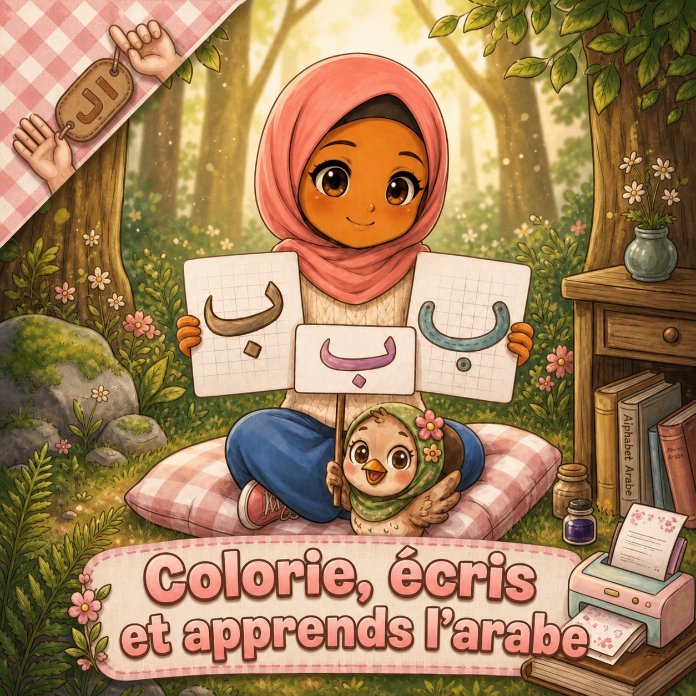

Votre prochain petit moment
Quelques minutes suffisent pour une petite séance. Faites une pause dès que votre enfant en a besoin.
AVEC AYA & MIMI
Écoute, retrouve, trace et colorie.
Tu peux t’arrêter et reprendre à ton rythme.

POUR EXPLORER
Les séances et les dessins sont enregistrés sur cet appareil. Ils ne se synchronisent pas entre appareils.
Le nom de la lettre
Écoute, puis redis son nom si tu en as envie.
La fiche se prépare…
UN PETIT PAS DE PLUS
Tu pourras retrouver cette lettre une autre fois.
POUR ACCOMPAGNER, SIMPLEMENT
Ce suivi décrit les activités réalisées dans l’appli. Il ne certifie pas la maîtrise de la lecture ou de l’écriture.
Quelques minutes suffisent pour une petite séance. Faites une pause dès que votre enfant en a besoin.
| Lettre | Découverte | Reconnaissance | Écriture / coloriage | À revoir |
|---|
Écoutez le nom de la lettre ensemble. Laissez votre enfant choisir avant de lui montrer la réponse. Pour écrire, suivez les flèches de la fiche et observez aussi la place des points. Le dessin n’est pas noté automatiquement.
Le nom de la lettre et sa lecture avec les voyelles sont deux apprentissages distincts. Cette version travaille les lettres isolées ; les formes dans les mots, les voyelles et la lecture de mots ne sont pas encore des leçons disponibles.
Les enregistrements et les fiches existants sont conservés. Une validation pédagogique par un enseignant reste à organiser.
Alif, Bâ et Tâ restent disponibles gratuitement. L’accès aux autres lettres nécessite un abonnement.
Voir l’inscription et les conditionsDonnées et dessins conservés uniquement dans ce navigateur, pour le profil sélectionné. Effacer les données du navigateur les supprime.